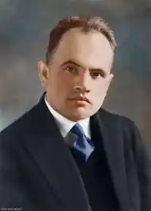

Олесь Бабій народився 17 березня 1897 року в селі Середня Калуського району Івано-Франківської області у багатодітній, але заможній родині Йосипа і Катерини Бабіїв. Закінчивши парафіяльну однорічну школу в рідному селі, він прагне вчитися далі. Батьки бачили в синові хист до науки, тому заради освіти сина батько навіть продає поле. Олесь продовжує своє навчання у Войнилівській чотирикласній школі, а згодом — у Стрийській гімназії.
1914 року на українську землю прийшла Перша світова війна. 17-річний Олесь записується в Стрию у Легіон січових стрільців. Своє бойове хрещення Бабій пройшов у Карпатах проти російської армії, а згодом був переведений на італійський фронт, де воював у піхоті. Перехворівши на пневмонію, був звільнений від проходження фронтової служби і повернувся в Україну.
Після розпаду австрійської монархії він поступив військовим старшиною на службу до Української галицької армії. 1919 року УГА відступає із Західної України на територію УНР, де і об'єднується з Армією УНР Петлюри і бере участь у знаменній Київській наступальній операції. Її корпуси очистили від більшовицьких військ майже все Правобережжя і 31 серпня увійшли в Київ. Після стрілецького походу на Київ опинився в польському полоні, звідки йому вдалось утекти. Першим надрукованим твором Олеся Бабія, який виступав під псевдонімом "Хмелик", став вірш "На Київ!", створений під час наступу на столицю об'єднаної української армії. Вірш було опубліковано в газеті "Стрілецька думка" від 5 жовтня 1919 року, але ще раніше його було покладено на мелодію і він увійшов до репертуару військових оркестрів. Після поразки національно-визвольного руху в Україні колишній січовий стрілець жив у Чехії і Словаччині, згодом перебрався до Львова, де зайнявся літературною та журналістською роботою. Працював у львівських газетах "Діло" та "Українські вісті". Свою першу збірку поезій "Ненависть і любов" видав у Львові 1921 року. Разом з відомими поетами Романом Купчинським, Василем Бобинським і Юрієм Шкрумеляком створив літературне об'єднання "Митуса". У 1924-1929 рр. здобував у Празі вищу освіту, ставши доктором літературознавства в Українському педагогічному інституті ім. Драгоманова. За 18 років у нього вийшло 6 збірок поезій і 5 збірок прози. 1934 року у статті "Поезія по цей бік барикади" Богдан-Ігор Антонич назвав Олеся Бабія "найздібнішим поетом" нового покоління письменників, у творчому доробку якого є твори "непересічної вражаючої сили". Згодом Бабій почав тісну співпрацю з Організацією українських націоналістів. 1925 року він увійшов до складу редакції журналу "Національна думка", а згодом став його редактором. У січні 1928 року він починає редагувати друкований орган проводу ОУН "Розбудова нації", стає учасником І Конгресу українських націоналістів, який відбувся у січні-лютому 1929 року у Відні. За участь у конгресі та антипольські настрої польська влада пред'являє Бабію звинувачення в антидержавницькій діяльності і в листопаді 1931 р. арештовує. На початку вересня 1932 року суд виніс вирок: 4 роки ув'язнення, які він відсидів в Дрогобицькій в'язниці. Перебуваючи під слідством, він і пише "Марш націоналістів" ("Зродились ми великої години..."), який був надрукований в журналі "Розбудова нації" за січень-лютий 1932 р. з таким повідомленням: "Із надісланих проектів тексту гімну ОУН прийнято проект, поданий одним з наших найвизначніших поетів, що запроторений у ворожу тюрму". 1932 року пісня була затверджена Проводом українських націоналістів, керівним органом ОУН, як гімн організації. Автором музики, ймовірно, був Омелян Нижанківський, хоча це не доведено. Вийшовши із в'язниці, працює шкільним інспектором на Підляшші та вчителем гімназії в Холмі. Після окупації німцями України, не маючи засобів для існування, змушений повернутися назад в рідне село. Востаннє він відвідав Середнє влітку 1944 р. Зі сходу наступала радянська армія, і Бабій розумів, що через тісну співпрацю з ОУН вжитися з новим режимом йому не вдасться, тому він переїжджає на Захід. Після 4 років поневірянь у таборах для перемiщених осiб у Карльсфельдi та Мюнхенi, він переїжджає до США. У Чикаго влаштовується в редакцію українського часопису при місцевому університеті та продовжує свою поетичну діяльність. Зазвичай пише про Україну. Після того, як поет емігрував в 1944 р., в рідному селі його вважали загиблим. Так вважала і радянська влада, тому репресії в 50-ті роки не торкнулися його родини. Тільки в 1968 р. в с. Середня з Чикаго прийшов лист, в якому Бабій повідомив, що живий та здоровий і перебуває в еміграції. Надалі свій зв'язок з рідними він вів за допомогою переписки зі своєю племінницею. У січні 1975 року він надіслав вітального листа з нагоди свят, в якому написав про те, що уже на пенсії, живе сам, здоров'я погіршується, а також про свою мрію: "Не знаю, на як довго життя мені хватить, але чую, що моя мрія не здійсниться — відвідати свій Рідний Край — Україну…" Невдовзі, 2 березня 1975 року Олеся Бабія не стало. Останніми його словами були: "Прощай, Україно і моя Родино". Поховали його на цвинтарі св. Миколая в місті Чикаго, а до гробу на труну поклали грудку землі з рідного села поета. 14 березня 1997 р. в с. Середня на стіні школи була відкрита меморіальна дошка на честь 100-річчя з дня народження поета.